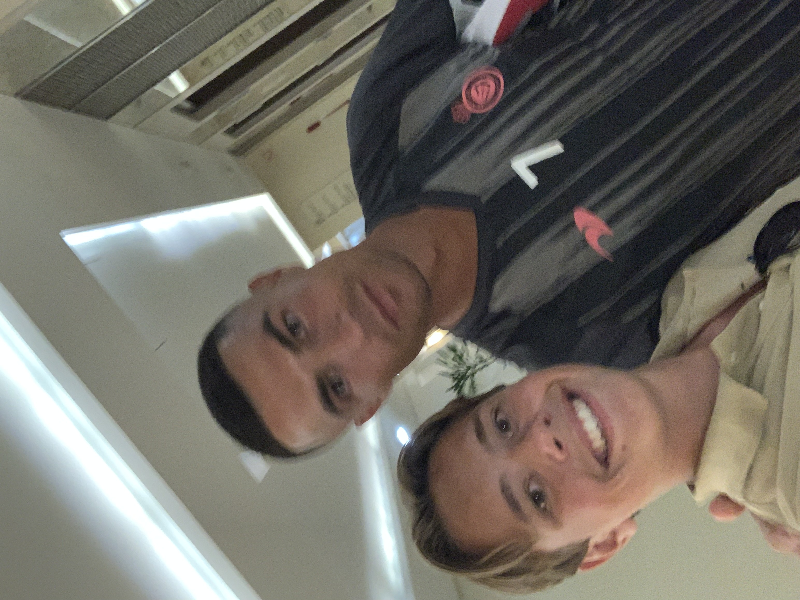

Om UCL
Champions League Fakta
- Real Madrid har vunnet turneringen 14 ganger.
- Juventus har tapt flest finaler (7 ganger!).
- Flest mål i én sesong: Cristiano Ronaldo – 17 mål.
- Flest mål igjennom tidene: Cristiano Ronaldo - 141 mål.
- Flest assist igjennom tidene: Cristiano Ronaldo - 42 mål.
- spillerene med flest røde kort er Ramos, Davidis og Zlatan med 4 røde kort hver
- spilleren som har vunnet turneringen flest ganger er Paco Gento (6 ganger med Real Madrid)
- spillerene som har tapt flest finaler er Buffon og Maldini med 3 finaletap hver 